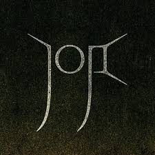

La historia de Joji, cuyo nombre real es George Miller, es una de las transformaciones más complejas y simbólicas de la era digital. No se trata solo de un cambio de carrera, sino de una ruptura con una identidad pública que él mismo construyó y que terminó por consumirlo. Su vida artística puede entenderse como un viaje desde el ruido extremo y la sátira grotesca hasta el silencio melancólico y la vulnerabilidad emocional. George Kusunoki Miller nació el 18 de septiembre de 1992 en Osaka, Japón, en el seno de una familia multicultural: madre japonesa y padre australiano. Esa mezcla cultural marcó profundamente su identidad. Crecer entre dos mundos distintos le dio una sensibilidad particular hacia el aislamiento, la pertenencia y la dualidad, temas que más tarde aparecerían en su música. Durante su juventud mostró interés por el cine, la narrativa absurda y la música. Sin embargo, antes de convertirse en un artista musical reconocido, encontró su primer escenario en internet, específicamente en YouTube, cuando la plataforma todavía estaba definiendo su lenguaje cultural. A comienzos de la década de 2010 creó el personaje de **Filthy Frank**, una figura exagerada, caótica y deliberadamente ofensiva que funcionaba como parodia del propio internet y sus excesos. Dentro de ese universo también apareció **Pink Guy**, un alter ego vestido con un traje rosa ajustado que protagonizaba canciones absurdas, humor físico extremo y situaciones surrealistas. Lo que para muchos era simplemente contenido grotesco, para otros era una sátira sofisticada de la cultura digital, el sensacionalismo y la banalidad viral. Su canal acumuló millones de suscriptores y cientos de millones de visualizaciones. Se convirtió en una figura de culto, un referente del humor incómodo y transgresor. Pero detrás del personaje había un creador cada vez más agotado. El mantenimiento constante de esa identidad exagerada implicaba presión creativa, exposición continua y un estilo de vida intenso. Miller comenzó a experimentar problemas de salud relacionados con el estrés, incluyendo convulsiones que él mismo atribuyó en parte a la carga que implicaba sostener ese personaje. El humor que lo había hecho famoso empezaba a sentirse como una prisión. La audiencia pedía más caos, más extremos, más provocación. Sin embargo, él quería algo distinto. Paralelamente, bajo el disfraz de Pink Guy, había lanzado música que, aunque cómica, demostraba habilidades reales de composición y producción. La ironía era evidente: entre bromas y letras absurdas, se filtraba un talento musical genuino. Con el tiempo, la música dejó de ser un chiste y comenzó a convertirse en una vía de escape. En 2017 tomó una decisión radical: abandonar el universo de Filthy Frank para enfocarse completamente en su faceta musical bajo el nombre artístico de Joji. Fue una ruptura abrupta y arriesgada. Muchos dudaban que pudiera desprenderse del estigma del comediante de internet y ser tomado en serio. Ese mismo año lanzó el EP *In Tongues*, un proyecto oscuro, minimalista y profundamente introspectivo. Canciones como “Slow Dancing in the Dark” mostraron una sensibilidad totalmente distinta a la de su etapa anterior. La producción era atmosférica, con influencias del R&B alternativo y el lo-fi; las letras hablaban de amor no correspondido, inseguridad y vacío emocional. La voz de Joji no buscaba demostrar potencia técnica, sino transmitir fragilidad. El contraste con el caos de Filthy Frank era absoluto. Donde antes había gritos y exageración, ahora había susurros y melancolía. Su incorporación al colectivo y sello 88rising fue clave para consolidar su transición. Esta plataforma, enfocada en artistas asiáticos y asiático-americanos, le permitió construir una identidad musical independiente de su pasado viral. En 2018 lanzó su primer álbum de estudio, Ballads 1, que debutó en el número uno de la lista Top R&B/Hip-Hop Albums de Billboard, convirtiéndolo en el primer artista asiático en lograr esa posición. Este hito no solo fue importante a nivel comercial, sino también simbólico: validaba su reinvención. En 2020 publicó Nectar, un álbum más ambicioso y pulido. Aquí expandió su sonido con arreglos más complejos y una producción más cinematográfica. Canciones como “Sanctuary” y “Run” mostraron un mayor rango vocal y una evolución artística evidente. El disco exploraba la soledad, el deseo, la culpa y la desconexión en un mundo hiperconectado. Su estética visual también cambió: más estilizada, más enigmática, menos caricaturesca. Joji ya no era un ex-youtuber intentando ser músico; era un músico consolidado. En 2022 lanzó Smithereens, un proyecto más breve y contenido que incluyó “Glimpse of Us”, su mayor éxito comercial hasta la fecha. La canción se convirtió en un fenómeno global por su crudeza emocional. Habla de estar con alguien mientras todavía se piensa en otra persona, un sentimiento incómodo y honesto que conectó con millones. Esa capacidad de transformar vulnerabilidad en arte accesible se convirtió en su sello distintivo. Lo más fascinante de su historia no es solo el éxito musical, sino la decisión consciente de abandonar la identidad que lo hizo famoso. En la era digital, donde la monetización y la viralidad suelen dictar el rumbo de los creadores, Miller eligió renunciar a una máquina de éxito garantizado para perseguir algo más auténtico. Esa ruptura implicó perder parte de su audiencia original, enfrentar escepticismo y reconstruir su imagen desde cero. Hoy, Joji mantiene una presencia pública reservada. Evita hablar extensamente de su pasado como Filthy Frank y rara vez concede entrevistas profundas sobre esa etapa. Esa distancia parece formar parte de su proceso de protección personal. Si Filthy Frank representaba la explosión del absurdo y la sátira agresiva, Joji representa la introspección y la contención. Son dos extremos de una misma persona que encontró en la música una forma más sostenible y honesta de expresión. Su trayectoria simboliza la posibilidad de reinventarse en un entorno que tiende a encasillar. Es la prueba de que la identidad digital no tiene que ser definitiva. La historia de Joji es, en esencia, la historia de alguien que se permitió evolucionar, incluso cuando esa evolución implicaba destruir la versión más popular de sí mismo. De la comedia caótica al susurro melancólico, de la máscara rosa al escenario internacional, su transformación es una de las más radicales y significativas del entretenimiento contemporáneo.
